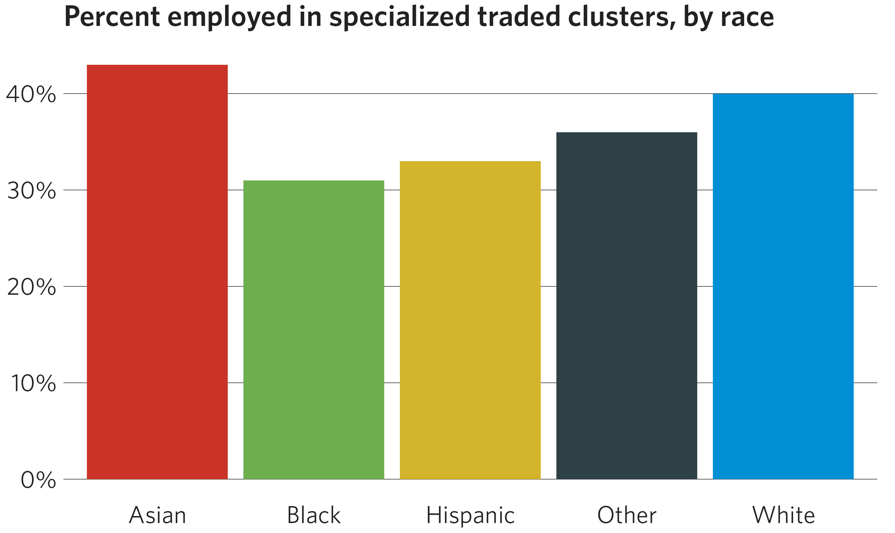
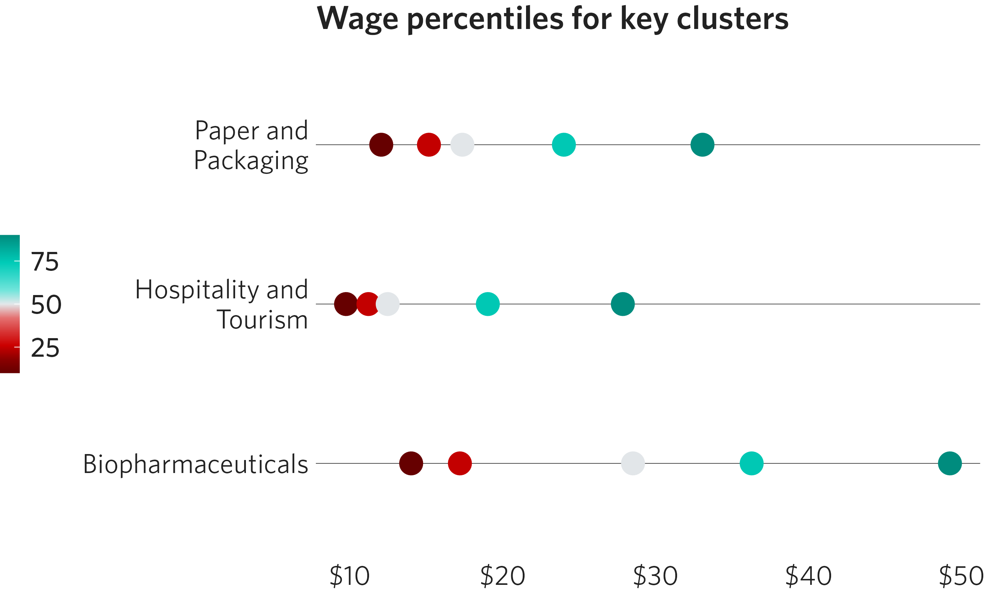
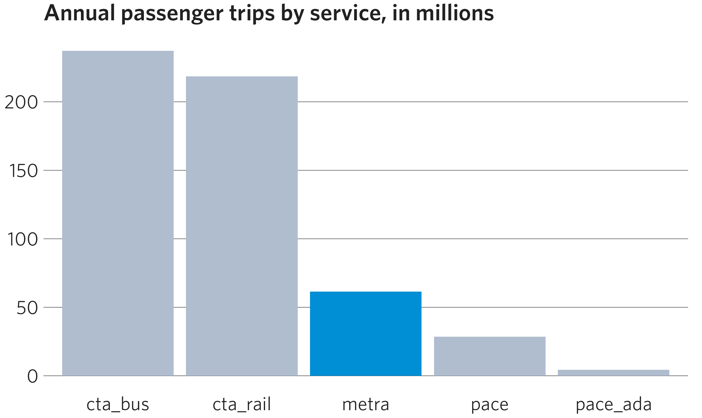
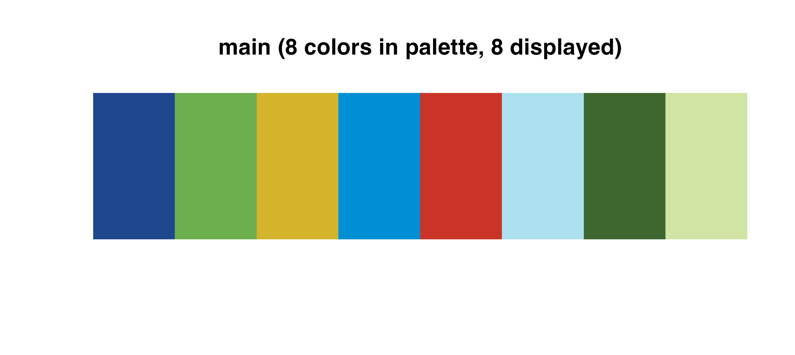
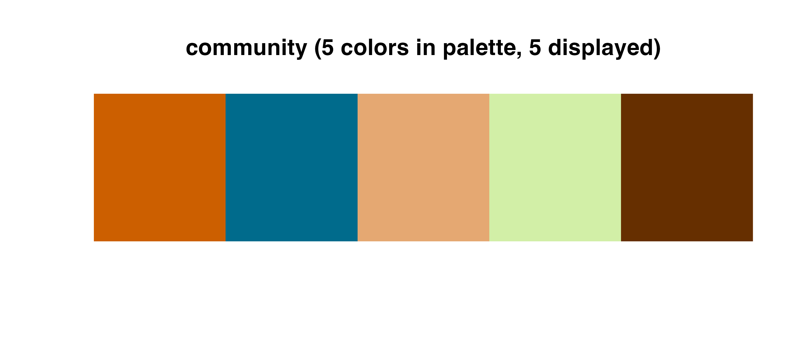
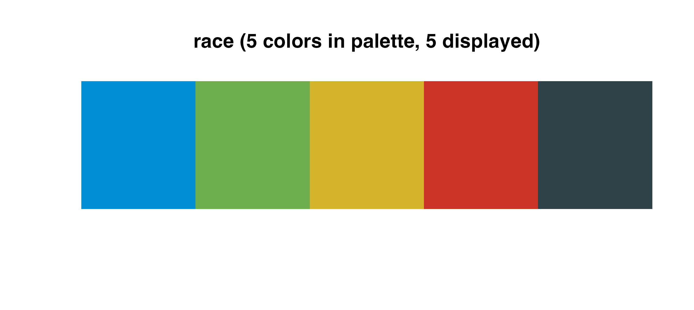
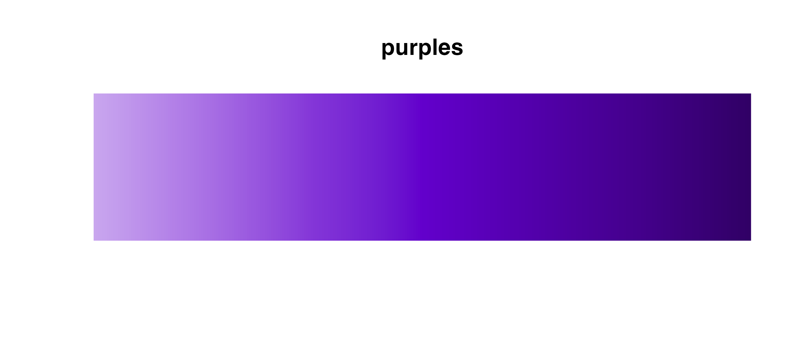

There are 32 color palettes in the cmapplot package, across three
categories: discrete, sequential, and divergent. Mirroring the
underlying functionality of ggplot2, cmapplot can apply these color
palettes as either discrete or continuous
scales to either the color (outline) or fill
attributes of a ggplot.
This table lists all palettes currently available in the package:
| Discrete | Sequential | Sequential (multi-hue) | Divergent |
|---|---|---|---|
| main | reds | yellow_orange_red | yellow_purple |
| prosperity | oranges | green_teal_blue | orange_blue |
| community | yellows | orange_red | red_teal |
| environment | greens | yellow_orange | purple_green |
| governance | teals | yellow_green | blue_yellow |
| mobility | blues | green_teal | teal_orange |
| legislation | purples | teal_blue | green_red |
| friday | grays | red_purple | |
| race |
Using CMAP color palettes in plots
Discrete scales
Discrete color scales are used to assign colors to discrete bins,
such as the lines in a time series line chart. Discrete scale functions
work with any palette – discrete, sequential, or divergent. Add a
discrete color scale by calling either the
cmap_fill_discrete() or cmap_color_discrete()
function in your plot construction.
Note that discrete scales will automatically interpolate additional colors if the dataset has more colors than the underlying palette. This can be helpful but is not ideal for finished graphics.
df <- dplyr::filter(grp_over_time, category == "Goods-Producing")
ggplot(data = df) +
geom_line(mapping = aes(x = year, y = realgrp, color = cluster),
size = 1.25) +
scale_x_continuous(breaks = seq(from = 2007, to = 2017, by = 2)) +
cmap_color_discrete(palette = "community", reverse = TRUE) +
theme_cmap() +
ggtitle("Real GRP of goods-producing clusters over time")
#> Warning: Using `size` aesthetic for lines was deprecated in ggplot2 3.4.0.
#> ℹ Please use `linewidth` instead.
#> This warning is displayed once every 8 hours.
#> Call `lifecycle::last_lifecycle_warnings()` to see where this warning was
#> generated.
#> Warning: This manual palette can handle a maximum of 5 values. You have
#> supplied 6
#> Warning: Removed 11 rows containing missing values or values outside the scale range
#> (`geom_line()`).
Race/ethnicity scale
In order to maintain a consistent data language, CMAP uses specific
colors for displaying data based on race and ethnicity. To map these
colors to each demographic group, use cmap_fill_race() or
cmap_color_race().
In the arguments, specify the case-sensitive name of each group as it appears in your data. The functions can be used even if your dataset does not contain every race/ethnicity category — simply omit the parameters for the missing categories. Likewise, if your dataset already contains the default race/ethnicity categories (case-sensitive) specified in the race palette, no arguments have to be provided.
df <- dplyr::filter(
traded_emp_by_race,
Race != "Regional average" & variable == "SpecializedTraded"
)
ggplot(data = df) +
geom_col(mapping = aes(x = Race, y = value, fill = Race)) +
scale_y_continuous(labels = scales::label_percent(accuracy = 1)) +
cmap_fill_race(white = "White",
black = "Black",
hispanic = "Hispanic",
asian = "Asian",
other = "Other") +
theme_cmap(show.legend = FALSE) + # Legend is redundant in this example
ggtitle("Percent employed in specialized traded clusters, by race")
Continuous scales
Continuous color scales work with sequential and divergent palettes.
Add a continuous scale by calling either the
cmap_fill_continuous() or
cmap_color_continuous() function in your plot construction.
If you’re using a divergent palette, you can specify the midpoint where
the divergence begins (default is zero).
df <- dplyr::filter(
percentile_wages,
cluster %in% c("Biopharmaceuticals", "Hospitality and Tourism", "Paper and Packaging")
)
ggplot(data = df) +
geom_point(mapping = aes(x = cluster, y = wage, color = percentile),
size = 5) +
scale_y_continuous(labels = scales::dollar) +
scale_x_discrete(labels = scales::label_wrap(18)) +
coord_flip() +
cmap_color_continuous(palette = "red_teal", middle = 50) +
theme_cmap() +
ggtitle("Wage percentiles for key clusters")
Highlighting categories
If you want to draw attention to a specific group in your graph, use
cmap_fill_highlight() or
cmap_color_highlight(). This will make your highlighted
group one color and all other groups identical in another color. Specify
the vector in your data that determines the groups, and then the value
of the group to be singled out. Note that this must be the same
vector specified in the fill/color aesthetic.
The highlight and non-highlight colors have defaults, but can be changed
with the color_value and color_other
parameters, respectively.
More than one category can be highlighted as well, by feeding a
vector of values into the the value argument. See
?cmap_fill_highlight for details.
df <- dplyr::filter(transit_ridership, year == 2019)
ggplot(data = df) +
geom_col(mapping = aes(x = system, y = ridership, fill = system)) +
cmap_fill_highlight(field = transit_ridership$system,
value = "metra") +
theme_cmap(show.legend = FALSE) + # Legend is redundant in this example
ggtitle("Annual passenger trips by service, in millions")
Available color palettes
Palettes are stored in a tibble in the cmapplot_globals
environment. This tibble can be accessed with
get_cmapplot_global("palettes"), with specific details
about any specific palette most easily accessed with
fetch_pal(). Palettes can be visualized in the plot window
with viz_palette() and viz_gradient().
Discrete palettes
Use these palettes with cmap_fill_discrete() or
cmap_color_discrete():

The race palette is a special discrete palette, which should be used
with the specific functions cmap_fill_race() or
cmap_color_race():

Sequential palettes
Use these palettes with
cmap_fill_continuous()/cmap_color_continuous()
or cmap_fill_discrete()/cmap_color_discrete().

If you use a sequential palette for a discrete scale, the package
will automatically choose colors from across the selected gradient and
interpolate additional ones if needed. For example, the
blues palette is shown below, interpolating nine colors
from the initial palette list of seven.
Divergent palettes
Use these palettes with
cmap_fill_continuous()/cmap_color_continuous()
or cmap_fill_discrete()/cmap_color_discrete().
Using these palettes for a discrete scale will behave similarly to the
discrete use of blues shown above.